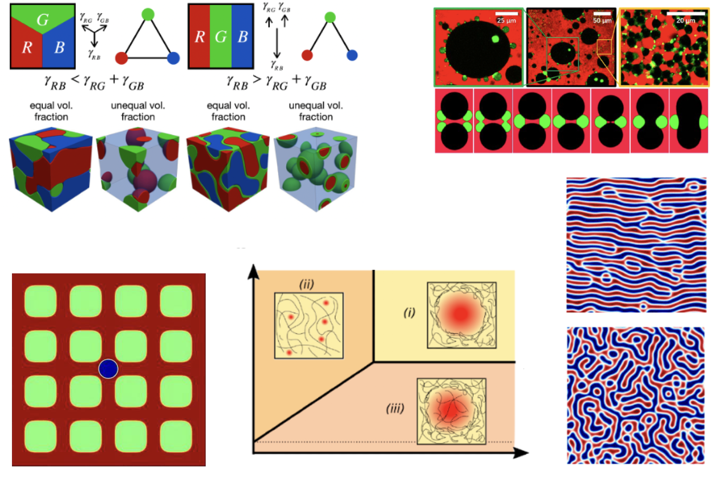

Sheng Mao
Assistant Professor
Peking University
Contact
Email
Scholar
ORCID
GitHub
Address:
Department of Mechanics and Engineering Science
Peking University
No.5 Yiheyuan Road
Haidian Beijing
China
Machine-learning inspired multiscale modeling

Machine learning frameworks such as deep neural networks, generative adversarial networks, graph networks, just to name a few, have been a great success in many engineering applications. Our group focuses on the development of multi-scale modeling algorithms based on machine learning techniques, with a few successful attempts on soft mechanical metamaterials. Currently we have devoted ourselves to the studies of granular materials and mesoscale material modeling. In this field, we are currently in close collaboration with AISI and DP technology.
Nonlinear mechanics of materials
Developing fundamental theories and advanced computational methods for complex solids is the main focus of our group. This is a broad area of research, and we currently focus on the following problems:
1. Phase field modeling of fracture
2. Rational design and geometric optimization
Phase separation of complex mixtures
Phase separation is a common phenomenon in nature and industry with recent discovery of its significance in biology. Our group aims at developing physics-based models and efficient numerical solvers to study phase separation of complex mixtures in various environment, including polymer networks, porous media, biological environment and etc. We have close collaboration with researchers in physics, chemistry and biology.